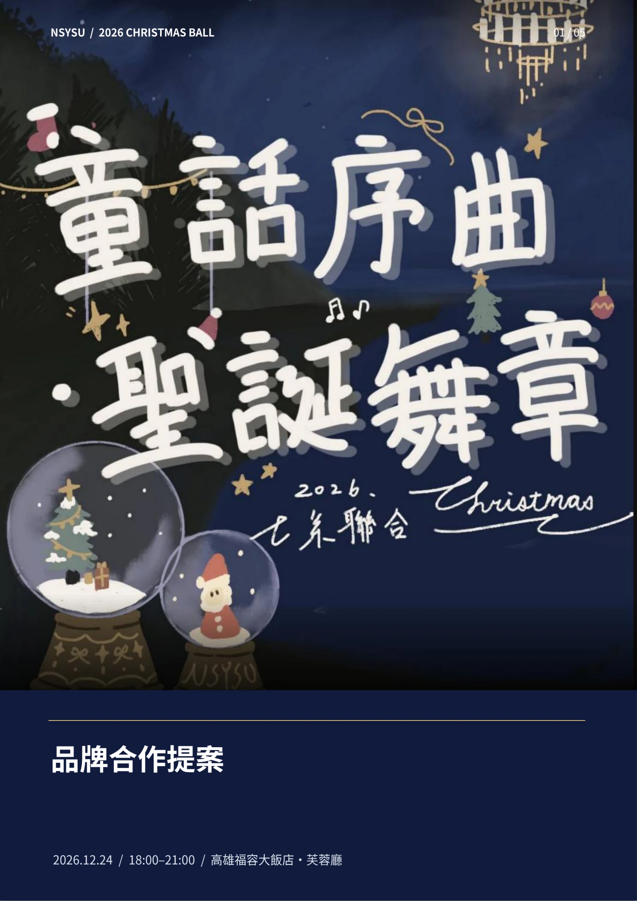
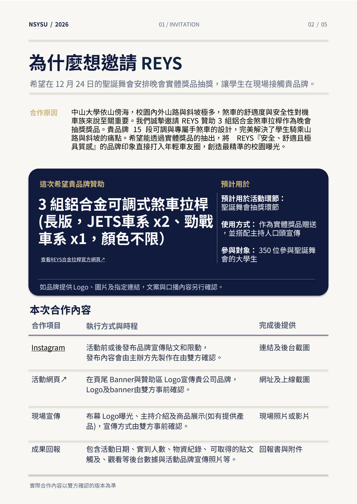
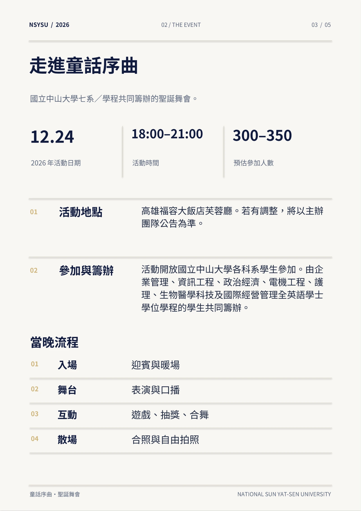
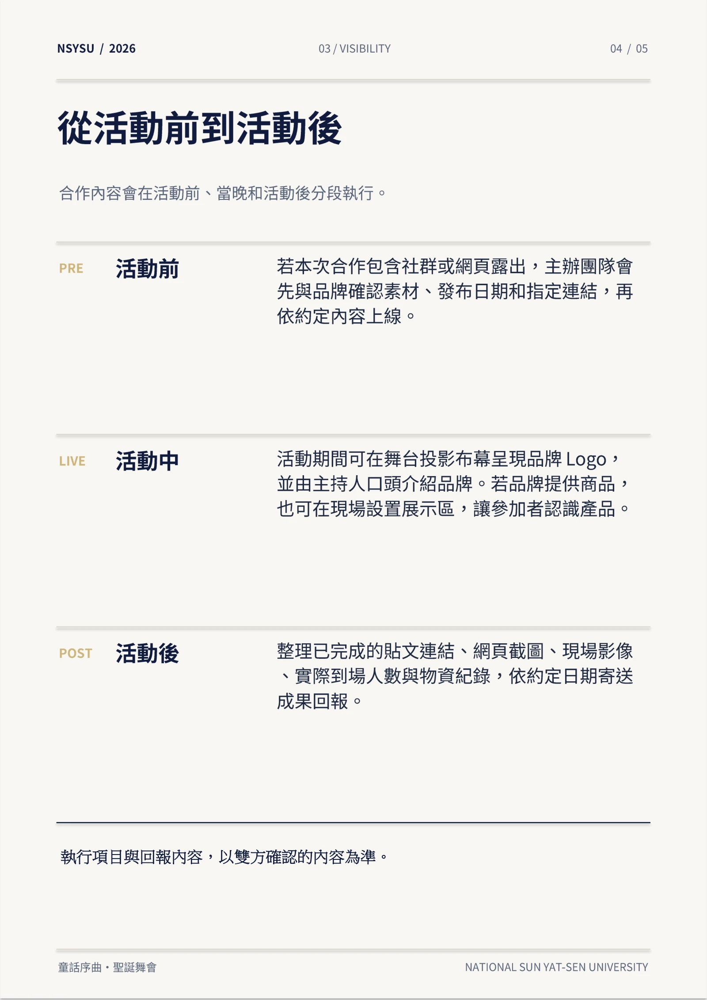
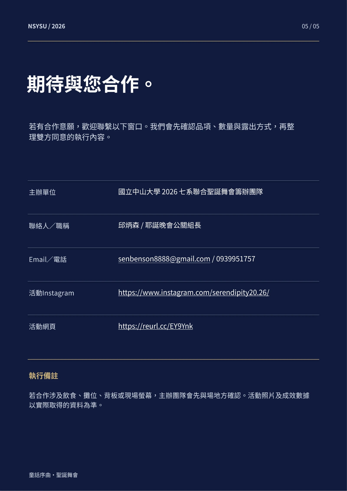

2026 NSYSU CHRISTMAS BALL
REYS 合作提案
中山大學七系聯合聖誕舞會《童話序曲，聖誕舞章》
01 / 05 品牌合作提案

閱讀本頁文字
NSYSU / 2026 CHRISTMAS BALL
01 / 05
品牌合作提案
2026.12.24 / 18:00 –21:00 / 高雄福容大飯店・芙蓉廳
02 / 05 邀請 REYS 合作

閱讀本頁文字
NSYSU / 2026
01 / INVITATION
02 / 05
為什麼想邀請
REYS
希望在
12 月24 日的聖誕舞會安排
晚會實體獎品抽獎
，讓學生在現場接觸貴品牌
。
合作原因
中山大學依山傍海
，校園內外山路與斜坡極多
，煞車的舒適度與安全性對機
車族來說至關重要
。我們誠摯邀請
REYS 贊助
3 組鋁合金煞車拉桿作為晚會
抽獎
獎品
。貴品牌
15 段可調與專屬手煞車的設計
，完美解決了學生騎乘山
路與斜坡的痛點
。希望能透過實體
獎品的
抽出
，將 REYS 『安全
、舒適且極
具質感
』的品牌印象直接打入年輕車友圈
，創造最精準的校園曝光
。
這次希望貴品牌
贊助
3 組鋁合金可調式煞車拉桿
(長版
，JETS 車系
x2 、勁戰
車系
x1 ，顏色不限）
查看
REYS 合金拉桿官方網頁
預計用於
預計用於活動環節
：
聖誕舞會抽獎環節
使用方式
： 作為實體獎
品贈送
，並搭配主持人口
頭宣傳
參與對象
： 350 位參與聖誕舞
會的大學生
如品牌提供
Logo 、圖片及指定連結，文案與口播內容另行確認
。
本次合作內容
合作項目
執行方式與時程
完成後提供
Instagram
活動前或後發布品牌宣傳貼文和限動，
發布內容會由主辦方先製作在由雙方確認。
連結及後台截圖
活動網頁↗
活動網頁
在頁尾
Banner 與贊助區
Logo 宣傳貴公司品牌，
Logo 及banner 由雙方事前確認。
網址及上線截圖
現場宣傳
布幕
Logo 曝光
、主持介紹
及商品展示
(如有提供產
品)，宣傳方式由雙方事前確認。
現場照片或影片
成果回報
包含活動
日期、實到人數、物資紀錄
、可取得的貼文
觸及、觀看等後台數據與
活動品牌宣傳照片等。
回報書與附件
實際合作內容以雙方確認的版本為準
03 / 05 活動介紹

閱讀本頁文字
NSYSU / 2026
02 / THE EVENT
03 / 05
走進童話序曲
國立中山大學七系／學程共同籌辦的聖誕舞會。
童話序曲・聖誕舞會
NATIONAL SUN YAT
-SEN UNIVERSITY
12.24
2026 年活動日期
18:00 –21:00
活動時間
300 –350
預估參加人數
01
活動地點
高雄福容大飯店芙蓉廳。若有調整，將以主辦
團隊公告為準。
02
參加與籌辦
活動開放國立中山大學各科系學生參加。由企
業管理、資訊工程、政治經濟、電機工程、護
理、生物醫學科技及國際經營管理全英語學士
學位學程的學生共同籌辦。
當晚流程
01
入場
迎賓與暖場
02
舞台
表演與口播
03
互動
遊戲、抽獎、合舞
04
散場
合照與自由拍照
04 / 05 曝光與執行方式

閱讀本頁文字
NSYSU / 2026
03 / VISIBILITY
04 / 05
從活動前到活動後
合作內容會在活動前、當晚和活動後分段執行。
童話序曲・聖誕舞會
NATIONAL SUN YAT
-SEN UNIVERSITY
PRE
活動前
若本次合作包含社群或網頁露出，主辦團隊會
先與品牌確認素材、發布日期和指定連結，再
依約定內容上線。
LIVE
活動中
活動期間可在舞台投影布幕呈現品牌
Logo ，
並由主持人口頭介紹品牌。若品牌提供商品，
也可在現場設置展示區，讓參加者認識產品。
POST
活動後
整理已完成的貼文連結、網頁截圖、現場影像
、實際到場人數與物資紀錄，依約定日期寄送
成果回報。
執行項目與回報內容，以雙方確認的內容為準。
05 / 05 合作聯絡方式

閱讀本頁文字
NSYSU / 2026
05 / 05
期待與您合作。
若有合作意願，歡迎聯繫以下窗口。我們會先確認品項、數量與露出方式，再整
理雙方同意的執行內容。
主辦單位
國立中山大學
2026 七系聯合聖誕舞會籌辦團隊
聯絡人／職稱
邱炳森
/ 耶誕晚會公關組長
Email ／電話
senbenson8888@gmail.
com / 0939951757
活動
Instagram
https://www.instagram.com/serendipity20.26/
活動網頁
https://reurl.cc/EY9Ynk
執行備註
若合作涉及飲食、攤位、背板或現場螢幕，主辦團隊會先與場地方確認。活動照片及成效數據
以實際取得的資料為準。
童話序曲・聖誕舞會